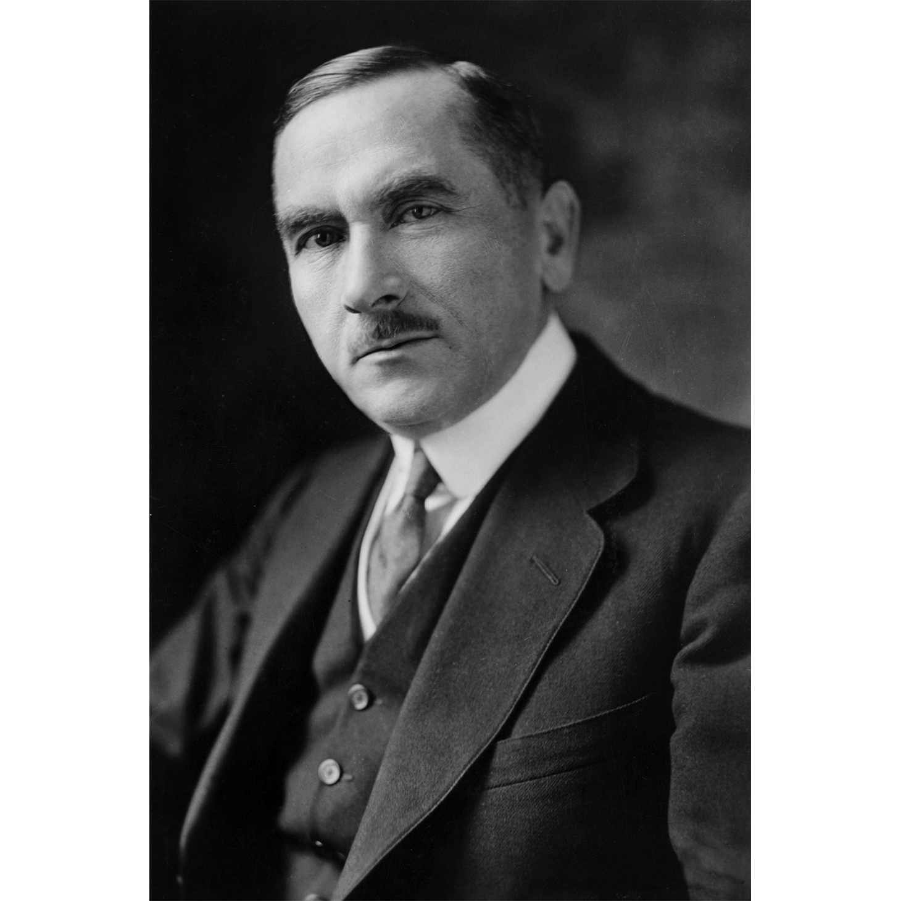

Roman Dmowski
Roman Stanisław Dmowski (ur. 9 sierpnia 1864 w Kamionku, zm. 2 stycznia 1939 w Drozdowie) – polski polityk, publicysta polityczny, minister spraw zagranicznych, poseł na Sejm Ustawodawczy II Rzeczypospolitej, poseł II i III Dumy Państwowej Imperium Rosyjskiego.
Współzałożyciel Narodowej Demokracji (endecji, ruchu narodowego), główny ideolog polskiego nacjonalizmu. Polski działacz niepodległościowy, związany z ruchem neoslawistycznym, postulujący w pierwszym etapie zjednoczenie wszystkich ziem polskich i uzyskanie autonomii w ramach Imperium Rosyjskiego, a później odzyskanie niepodległości w oparciu o sojusz z Rosją i ententą, w opozycji do Niemiec.
Jak wielu Polaków, Dmowski idealizował Zachód i jego instytucje polityczne i społeczne. Wyobrażał też sobie, że Polska odrodzona wprowadzi je u siebie. Koncepcja prorosyjska zdaniem Dmowskiego wynikała z przekonania, że spośród wielkich sąsiadów Polski to Niemcy, a nie Rosja są bardziej niebezpieczne dla Polski, oraz opierała się na wykorzystaniu momentu nasilenia się trudności wewnętrznych Rosji[2]. Pogląd ten wyrastał z dziewiętnastowiecznej polskiej tradycji nakazującej uważać Polskę za placówkę Zachodu, okupowaną przez wschodnie barbarzyństwo (rosyjskie, przyp. red), a poprzez swój opór i walkę zasłaniającą sobą świat ludzi wolnych przed naporem cywilizacji przymusu i nakazu. Podzielając pogląd o odmienności kulturowej Rosji i Zachodu, jak i o antagonistycznym charakterze różnic dzielących oba światy, Dmowski widział w ziemiach polskich nie tyle placówkę Zachodu, ile pole bitwy
Pod koniec I wojny światowej stał na czele Komitetu Narodowego Polski, który był uznany przez państwa Ententy za namiastkę rządu polskiego na emigracji i przedstawicielstwo interesów Polski[4]. Delegat Polski na konferencję paryską w 1919 i sygnatariusz traktatu pokojowego w Wersalu. Zagorzały przeciwnik polityczny Józefa Piłsudskiego i jego projektu tworzenia państwa federacyjnego – wizji wielowyznaniowej i wielonarodowościowej Polski, twórca inkorporacyjnej koncepcji państwa narodowego, zakładającej polonizację ludności niepolskiej. Jeden z ojców niepodległej Polski